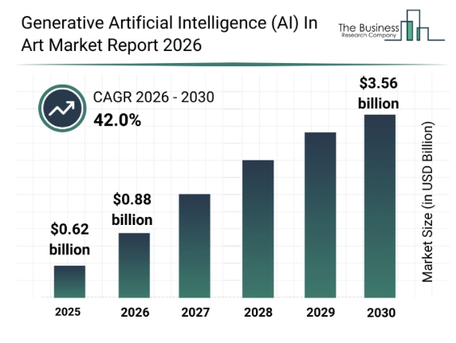

A practitioner's view
We spoke with our school's art teacher about how generative AI is changing the studio — from student reference images to professional commissioning.
Pak Reno, an art teacher from Sekolah Bogor Raya, argues that copyright law hasn't kept pace with generative AI, since AI training relies on scraping artists' work in ways the law wasn't built to address. He sees AI-generated work as detectable through visual "generative patterns" but nearly impossible to prove legally. He's optimistic about traditional skills staying relevant, believes AI has demotivated some illustrators but doesn't personally view it as a threat, and notes that neither he nor most artists around them pursue copyright claims because the process feels inaccessible and unfamiliar. He sees the job market shifting rather than shrinking, with new roles like prompt building emerging alongside the risk to existing ones.
The Public Believed The Creators are The One Who Should Hold The Copyrights/Ownerships
About 33.3% of respondents believed the creators should hold the copyrights/ownerships. According to the survey, the biggest potential threat of AI art in education is weakening student's ability in thinking and creativity for artistic expression. In addition, respondents proclaimed that it replace artists and companies starts to use AI art to create content.
The Ghibli Style AI Generated Trend
The latest update of OpenAI to GPT-4o has been reportedly used by millions of users doing a trend for generating the Ghibli Art Style. From the dreamy skies, expressive faces, and soft brushstrokes to being replicated through the studio’s signature aesthetic. OpenAI’s CEO Sam Altman was also involved in the trend by tweeting about updating his X - avatar to a Studio Ghibli - style image. However, these generated models to resemble the Ghibli Art-Style weren't accidental, but are likely scrapped without permission. The founder of Studio Ghibli himself quoted “I am utterly disgusted… I strongly feel that this is an insult to life itself.” This specific case study raises important copyright challenges while posing considerable ethical questions about ownership, creator identification, and the pressure on computational systems due to its widespread popularity.We can consider that if we want an internet that values consent, creativity, and fairness, tools that respect the boundaries set by creators must be approachable, which would be attached to their work.
5.8 billion image-text pairs
LAION-5B, the open dataset behind many image models, was assembled by scraping the web. A study found it contained millions of copyrighted works with no mechanism for opt-out at the time of collection.
Generative Artificial Intelligence (AI) in Art Market Report 2026
The generative AI in art market is valued at $0.88 billion in 2026 and is projected to reach $3.56 billion by 2030, growing at a compound annual growth rate (CAGR) of 42%.

The rapid growth of generative AI could create a major change in the art industry by transforming how artwork is produced, valued, and understood. AI allows images and designs to be created much faster, which can help businesses in areas such as advertising, entertainment, and design produce large amounts of content efficiently. However, this may also increase competition for human artists, particularly for jobs involving repetitive or commercial artwork. As AI becomes more common, it also challenges traditional ideas of art, creativity, and what it means to be an artist, since artwork can now be created with significant assistance from technology. This could shift the role of artists from creating everything manually to collaborating with AI, while also raising questions about originality, human effort, authorship, and the value of human creativity. Therefore, the growth of AI in art represents more than just a new technological tool, it could fundamentally change how the art industry operates and how society defines and values creativity.
Loss of creativity and passion in art
Many people and artists question themselves about the concern of AI taking over the creation of art these days and how it can lead to the loss of creativity and passion in the art world. Before AI, traditional art was known for its minimal direct artistic involvement that comes from the artist's personal ideas, emotions, skills and effort, something that is not needed for AI to enhance when it comes to generating art images. It has come to conclusions that its impact makes conventional art made by human artists worth less, any form of art that includes; paintings, sculpture, or photography. According to the research of Merel Meijer for her MSc Marketing Management at Rotterdam School of Management (Erasmus University - RSM), she addresses a crucial gap in understanding consumer behaviour towards AI in art with a statement coming from her, "The introduction of AI in the visual arts sparked a paradigm shift and has led to new platforms and galleries for AI-generated artworks," She then added “But there’s notable scepticism among potential buyers about its value and creativity. I wanted to know what’s behind the traditional belief that creativity is solely a human attribute.” This statement highlights the idea that many people who might buy AI-generated art are doubtful about whether it is truly valuable or creative.
Thoughts on AI Art
According to Roxane Lapa, a South African digital artist and designer with over 20 years of experience, she believes that when the first generative AI programs start rising exponentially, it can severely threaten the livelihoods of portrait and concept artists. She stated “I didn’t realize how soon that would start happening and how many more jobs were on the line.” She sees these programs as a way to replace artists' jobs and makes them less important as most people would stop from paying illustrators for avatars when they could simply make one themselves for free. Art styles that were once made entirely through the creativity coming from humans are now being scraped by AI without any consent in a matter of seconds.